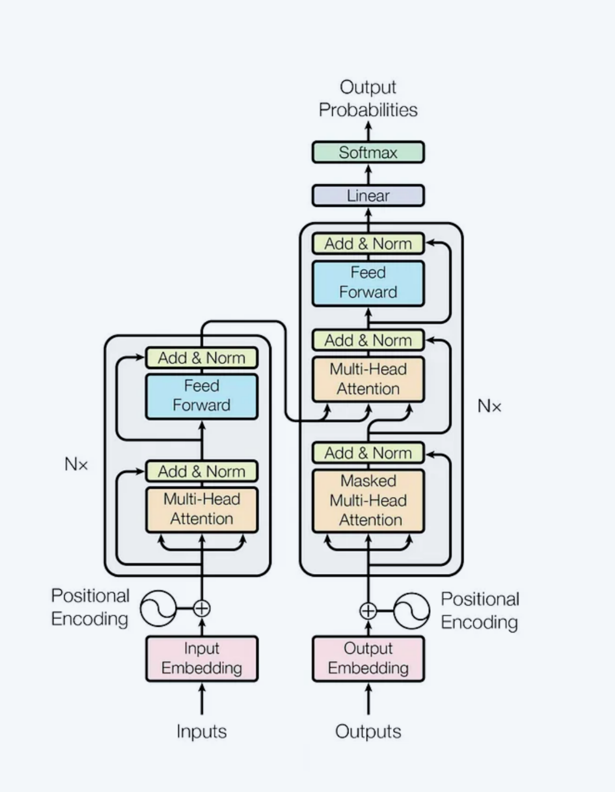

I coded entire
Transformer Architecture


I coded entire
Know about the
Token Embedding
In the Transformer model, each token is represented by a vector called an "embedding," which captures the token's semantic meaning—tokens with similar meanings have similar embeddings.
For an input sequence, the tokens are mapped to their embeddings in a matrix of size T x C, where T=4 is the number of tokens and C=768 is the embedding dimension.
To capture the token's position within the sequence, position embeddings for each position (0 to 3) are also created.
These token and position embeddings are summed to produce position-aware embeddings, all of which are part of the model parameters and tuned during training.
Positional Embedding
The Transformer then computes three vectors for each of the T vectors (each of row in the T × C matrix from the previous section): “query”, “key” and “value” vectors. This is done by way of three linear transformations (i.e., multiplying with a weight matrix):
Query - The query vector determines the focus of attention
Key - The key vector represents the content that could be attended to.
Value - The value vector holds the information that will be passed along if the attention mechanism finds a match between the query and key.
The weight matrices that produce Q, K, V matrices are all part of θ.
The query, key and value vectors for each token are packed together into T × C matrices, just like the input embedding matrix. These vectors are the primary participants involved in the main event which is coming up shortly: self-attention.
Querry-Key-Value Vectors
Self-attention, as we've alluded to earlier, is the core idea behind the Transformer model.
We first compute an “attention scores” matrix by multiplying the query and key matrices (note that we are only looking at the first head here, but the same operation occurs for all heads):
This matrix tells us how much attention, or weightage, a particular token needs to pay to every other token in the sequence for producing its output, i.e., prediction for the next token. E.g., the token "bring" has an attention score of 0.3 for the token "robot" (row 4, column 2 in matrix A1).
Applying Self-Attention
The attention score for a token needs to be masked if it occurs earlier in the sequence for a given target token.
E.g., in our input phrase: “the robots will bring _____”
It makes sense for the token “bring” to pay attention to the token “robots”, but not vice-versa, because a token should not be allowed to look to the future tokens for making a prediction of its next token.
So we hide the upper-right triangle of the square matrix A1, effectively setting the attention score to 0.
We then bring the third actor onto the stage, the Value matrix V:
The output for the token “robots” is a weighted sum of the Value vectors for the previous token “the” and itself. Specifically, in this case, it applies a 47% weight to the former, and 53% weight to its own Value vector (work out the matrix multiplication between A1(T × T) and V1(T × H) to convince yourself that this is true). The outputs for all other tokens is computed similarly.
Multi Heads
The final output for each head of self-attention is a matrix Y of dimensions T × H (T = 4, H = 64).
Having computed the output embeddings for all tokens across all 12 heads, we now combine the individual T × H into a single matrix of dimension T × C, by simply stacking them side-by-side:
64 embedding dims per head (H)× 12 heads = 768, the original size of our input embeddings (C).
Feed Forward Network
Everything we have done up to this point has involved only linear operations - i.e., matrix multiplications. This is not sufficient to capture complex relationships between tokens, so the Transformer introduces a single hidden-layer neural network (also referred to as a feed forward network, or a multi-layer perceptron (MLP)), with non-linearity.
The C length row vectors are transformed to vectors of length (4 * C) by way of a linear transform, a non-linear function like ReLU is applied, and finally the vectors are linearly transformed back to vectors of length C.
All the weight matrices involved in the feed forward network are part of θ.
Repeat N times
All the steps in Sections 3 to 5 above constitute a single Transformer block. Each block takes as input a T × C matrix, and outputs a T × C matrix.
In order to arm our Transformer model with the ability to capture complex relationships between words, many such blocks are stacked together in sequence:
Predicting Next Token
Finally, we are ready to make a prediction:
The last output of the last block in the Transformer will give us a C length vector for each of our input tokens. Since we only care about what comes after the last token, “bring”, we look at its vector. A linear transform on this vector - multiplying with another weight matrix of dimensions V × C, where V is the total number of words in our dictionary - will give us a vector of length V.
This vector when normalized gives us a probability distribution over every word in our dictionary, which allows us to the pick the one with the highest probability as the next token.
In this case, our Transformer has assigned a probability of 92% on “prosperity” being the next token, while there's only a 10% chance of “destruction”, so our completed sentence now reads: “the robots will bring prosperity”. I suppose we can now rest easy with the knowledge that AI's imminent takeover of human civilization promises a future of prosperity and well-being, rather than death and destruction.
Final Result
Now that we can predict the next token, we can generate text, one token at a time:
The first token that the model produces is added to the prompt and fed back into it to produce the second token, which is then fed back into it to produce the third, and so on.
The Transformer has a limit on the maximum number of tokens (N) that it can take as input, and therefore as the number of generated tokens increases, eventually we need to either cap the number of tokens to keep only the last N, or devise some other technique for shortening the prompt without losing information from the oldest tokens.
Get in Touch